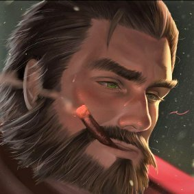

300 000,00 €
L'AMX 13 fut conçu peu après la deuxième guerre mondiale par les Ateliers de Construction d'Issy les Moulineaux. Il répondait au souhait exprimé par l'armée Française de disposer d'un char léger susceptible à la fois de mener des missions de reconnaissance et de remplir le rôle de chasseur de char. De plus le char devait être aérotransportable mais l'avion porteur a été abandonné en cours d'étude.
Doté d'un armement très puissant pour un engin de ce poids et capable de perforer 170 mm de blindage, l'AMX est resté en service près de trente ans. Ces excellentes capacités de manoeuvre et d'armement ont toutefois été obtenues au détriment de la protection
Il entra en service dans l'armée Française en 1953 et fut exporté dans plus de 30 pays. Le châssis de l'AMX 13 a servi de base à toute une gamme de véhicules, tels que transporteurs de troupes blindés, canons autopropulsés de 105 mm et de 155 mm, transporteurs de mortier, ambulances et transporteurs de matériel.
L'équipage se compose de trois hommes. Il n'y a pas besoin de chargeur puisque le canon est approvisionné par deux magasins à barillet de six coups et que les douilles sont éjectées automatiquement par une écoutille située à l'arrière de la tourelle. Une fois ces 12 coups tirés, le char doit toutefois quitter la zone d'opérations, pour permettre à l'équipage de recharger les magasins. La tourelle est de type oscillant.
Il y a, de plus, une mitrailleuse coaxiale de 7,5 ou de 7,62 mm et deux lanceurs fumigènes de chaque côté de la tourelle.
avis
alder du brésil
Поэтому я показываю им, что мне это удалось, я отомстил
Они ничего не могут сделать, они могут только говорить
Я, я их трахаю, Я Аруф Гангста, ты понял?
Я беру шикарный мир и все, что в нем есть
Миллион чакала, я тоже беру свои деньги
Я остаюсь собой, я не изменился
Даже если ты любишь меня, я не буду смешивать
Я здесь, чтобы сказать правду, я рэпер, который говорит правду
Я как тигр или как волк
Я остаюсь в своем углу, если ты заговоришь со мной, я все трахну
Повсюду, даже в твоей дыре
Да в твоей большой заднице, всю дорогу
Вы не можете определить меня, я загадочный
Но все, что я говорю, я серьезно
Rhobalas_lol
كما أنها تضيء هذه المناظر الطبيعية الجميلة
أفعل ملايين المشاهدات بنفسي
أجعل كل فتيات المدينة
أنت لا تفعل أي شيء لذا أغلق فمك
أنت تشغلهم ، أنا عروف جانجستا
لكنني لا أكسب صداقات ، بل أكسب المال
أنا لا أحسبهم ، أنا أحسب أموالي ، أنا ذكي جدًا
أعتقد أن لدي دائمًا حل عندما أواجه مشكلة
يجب أن تكون بجانبي إذا كنت تحبني
تفضل أنا أو مرحبا ، اختر عروف أو سيلم
Marex_lol
հարցրեք իմ ընկերներին, եթե ես կույս եմ, կտեսնեք XD ստացած պատասխանները հենց անցյալ շաբաթ ես սեքսով եմ զբաղվել, այնպես որ shhh- ը լռեց կույսը, այո, դուք կարծես լավ կույս լինեիք, քանի որ դուք հաճախ հիասթափված եք չհամբուրելով չնչին_ժպիտը լավ է միսիոներ լինել կամ լինել ' Ամազոն աղջկա հետ հա՞: Դուք չեք կարող պատասխանել, որովհետև չգիտեք ինչ c կամ գիտեք, բայց ստիպված էիք որոնման տողում մուտքագրել «միսիոներական սեքս» կամ «amazon sex» ՝ հասկանալու համար, թե ինչ էր mdddrrr !! Ինչևէ, լուրջ է ... ինձ վերադառնալու համար, կարծում եմ, որ ես իմ ամենալավ ընկերներից բաղկացած ամենաքիչ կույս տղան եմ, ոչ թե psk. Ես ունեցել եմ ամենաինտիմ հարաբերությունները, բայց psk ունեցել եմ ամենաթանկ կինը, որը ժպտում է իմ ընկերներին, ես չեմ, ով ասում է նա, նրանք են, ովքեր մեկնաբանում են իմ լուսանկարների տակ. «այն աղջիկը, որի հետ երեկ քնել ես որոշակի սենյակում, չափազանց գեղեցիկ է»: Այսպիսով, դրանից հետո, եթե ուզում եք, որ իր մասը գումարած կարդացեք, իրոք կարող է դուրս գալ օրենքից Ես ապրում եմ Նիորտի արվարձանում, նա կարո՞ղ է ձեզ պատմել Սթիվեն Սանչեսի մասին: նա ուղղակի հորեղբոր տղա է, այնպես որ OKLM hahaha մենք կտեսնենք, եթե դուք դեռ խոսում եք կույս mdddrrr pk վիրավորանք qd մենք ինքներս կույս եք, դուք ինձ միշտ կծիծաղեք !!
Mark Yeeter
Well what are you doing standing open_mouth? Damn, was it my mechanical keyboard that woke you up zzz? I'm sorry baby flushed, I'll meet you in an hour I'm playing POE cross_swords computer with Marex heart_eyes! Kisses I love you hearts !! i delete shaco next patch